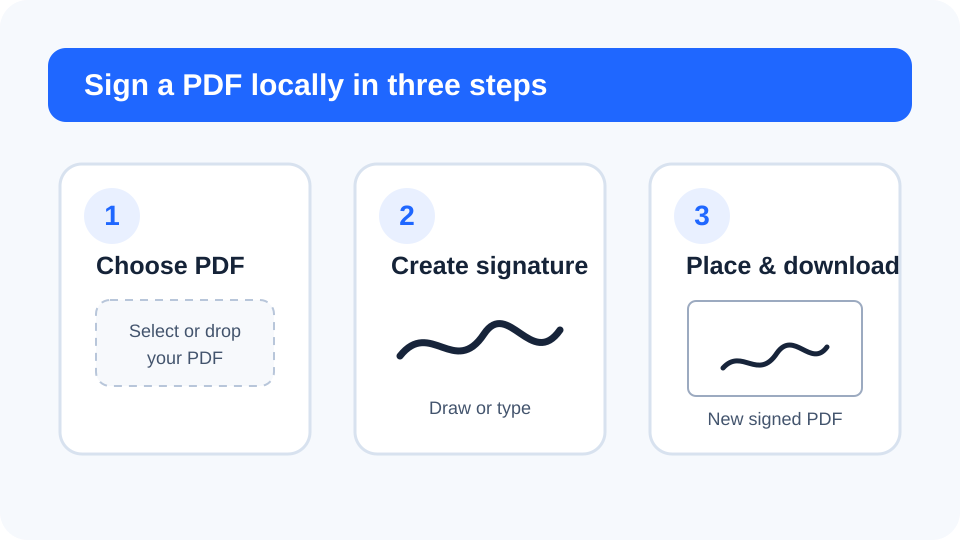
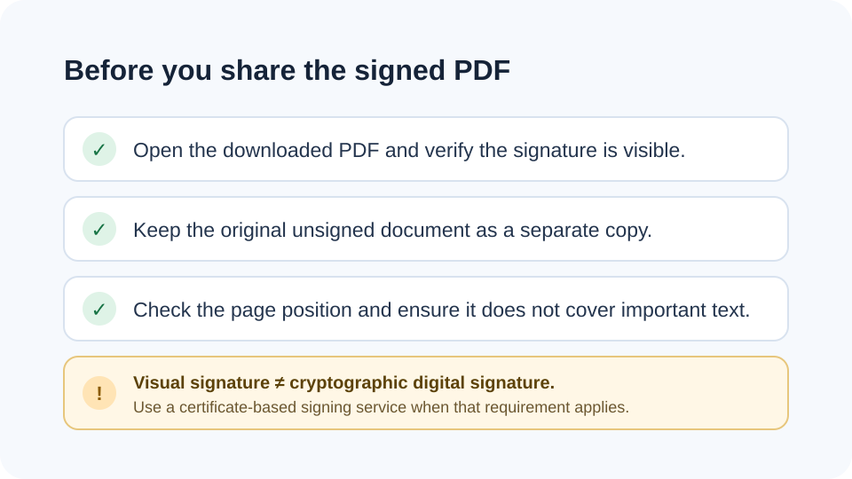

How to sign a PDF online without uploading it
A visual PDF signature can be created locally in your browser when you need to sign a document quickly without sending the source file to a conversion server.


1. Choose the PDF you want to sign
Start with the final version of the document. If pages need reordering, deletion or rotation, fix those issues before signing so the signature is added to the correct page. FreePDF Tools reads the selected PDF in the browser and creates a separate output file.
2. Draw or type your signature
The local signing tool supports two practical methods. Draw your signature using a mouse, stylus or finger, or type your name and generate a signature-style image. A signature image is cropped around the visible ink so it fits the PDF more naturally.
3. Choose the page and placement
Select the target PDF page and choose bottom-left, bottom-centre or bottom-right placement. You can also apply the same signature position to every page when a document requires repeated initials or a signature block.
Why browser-local signing can help with sensitive files
Many online signing tools begin by uploading documents to a remote system. A browser-local workflow can keep the PDF and signature in the device's memory during the operation. This reduces the amount of document data that needs to leave the device, although the security of the device and browser environment still matters.
Visual signature vs. digital signature
A visual signature is an image placed onto a PDF. It can be useful for everyday approvals, completed forms and documents that only need a visible signature. It is not the same as a cryptographic digital signature backed by an identity certificate, timestamp authority or qualified electronic-signature provider. When a contract or organization requires certificate validation or a specific legal signing process, use the approved signing service for that requirement.
Best practices after signing
- Keep the unsigned original as a separate copy.
- Open the downloaded PDF and confirm the signature appears in the intended place.
- Do not treat a visual signature as evidence that the signer has been independently authenticated.
- Use organizational or regulatory signing workflows when they are required.
Related PDF tools
- Organize PDF pages before signing.
- Add page numbers to final documents.
- Watermark PDF for draft or confidential copies.
- Understand browser-local PDF processing.